比赛分享
thoughts, rants and love stories
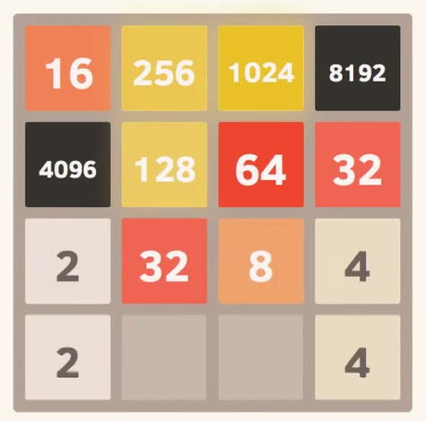Created by Lenciel 2016/01/17
Agenda
- "Who Am I?"
- "How I Win With Luck?"
- "And The Love Stories..."
Who Am I？
- Lenciel or House - 李昊
- Software Engineer
- OSS Participator
- TestBird VP of Engineering
How I Win With Luck?
学习规则
- 和"原始版本"的区别
- 初始化的时候，board上有3个tile（均为2）原来是2个
- 电脑生成的2/4 tile是1:1的概率 原来是9:1的概率
- 每次移动，merge在某一行/列只能发生一次 ，slide仍然是递归的 原来merge/slide都是递归的
Hmm...I've done sth like this before...
Submission #1
Rank No.1 (10240)
被别人超过了啊怎么办?
可以做的优化
- 更深地搜索:
- 多线程和多核的应用
- 需要更高效率的棋盘模型和操作速度
- 残局库和开局库
- 更好的搜索算法和启发式函数
- 需要更高效率的棋盘模型和操作速度(不能剪枝)
更好地搜索:
优化
- 更深地搜索:
- 使用64bit的word表示棋盘
- 创建transportation表
- Expectimax搜索
- 考虑单调性/光滑度/剩余空格数/大数是否在角落/...
- 充分考虑1:1概率的2/4随机tile的惩罚
更好地搜索:
Rank No.1 Again

Ada Lovelace
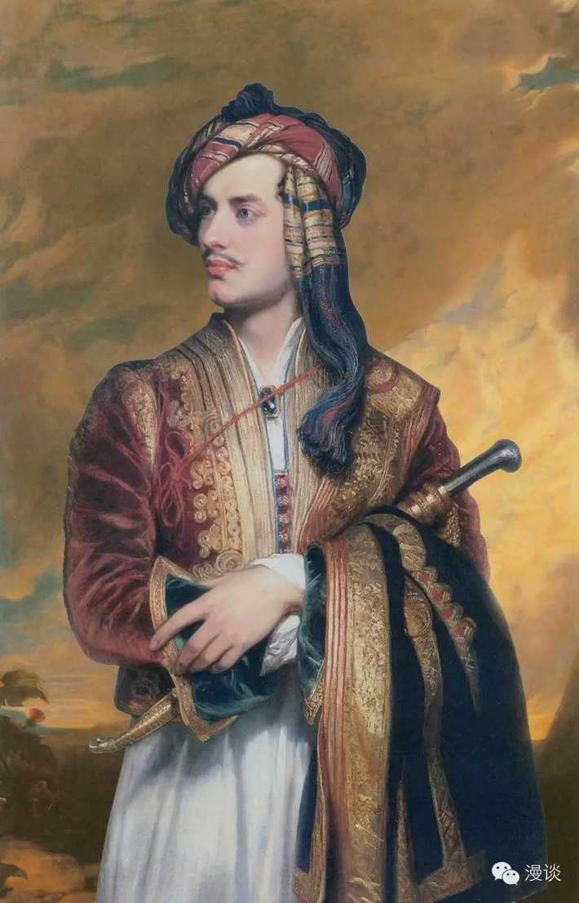 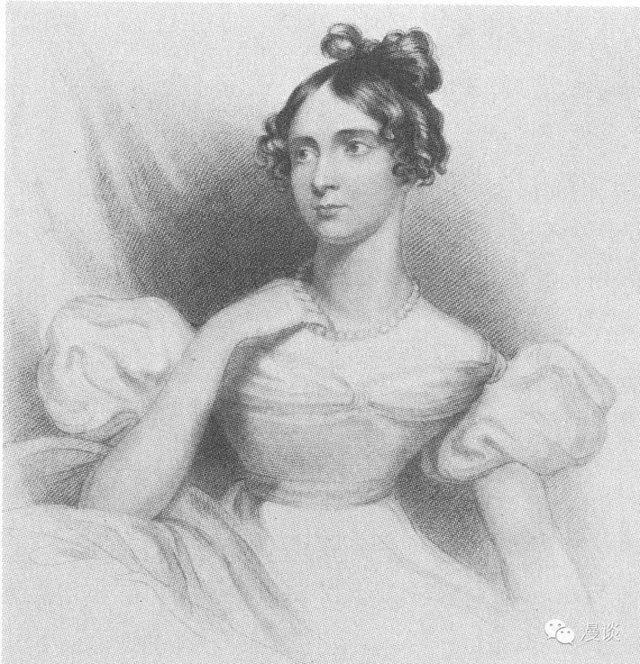
Ada Lovelace
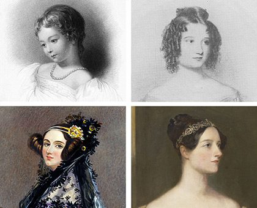Charles Babbage
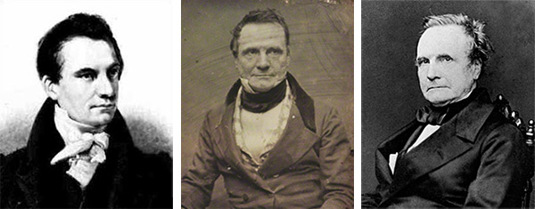- Mother: Don't be something like your father!
- Ada: Ah, why not!
When Ada(18) meets Babbage(42)
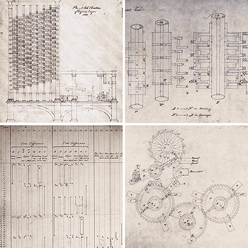- Babbage: Look what I've done!
- Ada: Ah, this is the state of art!
Ada: married, be a mother
但心思已经在数学上
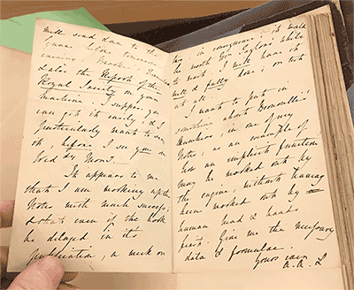- 师从Augustus de Morgan(1837)
- 身体不好又心情欠佳:数学暂停(1840)
Ada's Paper
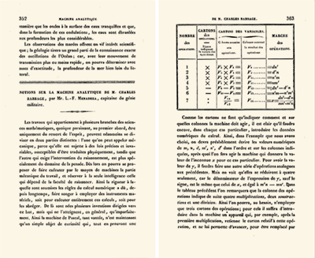- Babbage在意大利演讲, Menabrea现场笔记(1840)
- 笔记用法语发表(1842), Ada进行翻译和批注(1843)
Ada & Babbage
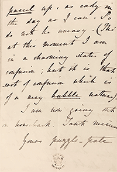- Just like we do projects on Github
- But msgs are carried by servants and She is in charge!
Ada & Babbage
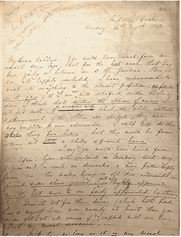 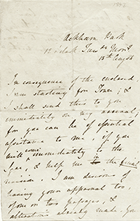 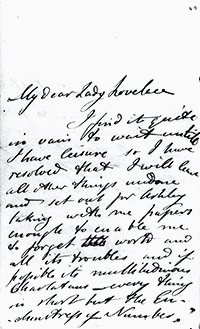- Babbage: "Enchantress of Number", I'm "Your faithful Slave"
- Ada: "You are brave man", I'm "High-Priestess of Babbage’s Engine"
- Ada is CEO and Babbage is CTO then
Ada is gone
- 大量时间在养病和陪家人
- 比父亲多活了200多天
- 1852年11月27日去世
- 母亲和Babbage均未出席葬礼
- 死后传闻很多:婚外情,赌博欠债等
- Babbage的研究再无进展